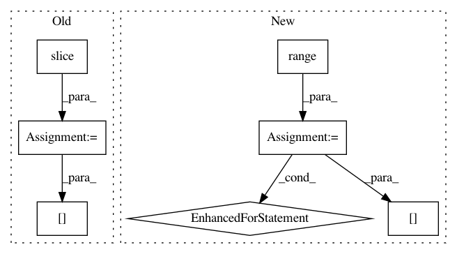

7db7922ab3e1d322cb2fd44ab2d29d5c27172540,lazyflow/operators/classifierOperators.py,OpPredictRandomForest,execute,#OpPredictRandomForest#Any#Any#Any#Any#,227
Before Change
// If our LabelsCount is higher than the number of labels in the training set,
// then our results aren"t really valid.
// Duplicate the last label"s predictions
chanslice = slice(min(key[-1].start, forests[0].labelCount()-1), min(key[-1].stop, forests[0].labelCount()))
t3 = time.time()
// logger.info("Predict took %fseconds, actual RF time was %fs, feature time was %fs" % (t3-t1, t3-t2, t2-t1))
return prediction[...,chanslice] // FIXME: This assumes that channel is the last axis
After Change
// If our LabelsCount is higher than the number of labels in the training set,
// then our results aren"t really valid. FIXME !!!
// Duplicate the last label"s predictions
for c in range(result.shape[-1]):
result[...,c] = prediction[...,min(c+key[-1].start, prediction.shape[-1]-1)]
t3 = time.time()
// logger.info("Predict took %fseconds, actual RF time was %fs, feature time was %fs" % (t3-t1, t3-t2, t2-t1))
return result
In pattern: SUPERPATTERN
Frequency: 3
Non-data size: 7
Instances
Project Name: ilastik/ilastik
Commit Name: 7db7922ab3e1d322cb2fd44ab2d29d5c27172540
Time: 2013-04-08
Author: christoph.straehle@iwr.uni-heidelberg.de
File Name: lazyflow/operators/classifierOperators.py
Class Name: OpPredictRandomForest
Method Name: execute
Project Name: pymc-devs/pymc3
Commit Name: 7d8c14a3b812fbd652dedb63c25c67df77661e01
Time: 2016-02-16
Author: thomas.wiecki@gmail.com
File Name: pymc3/step_methods/metropolis.py
Class Name: BinaryMetropolis
Method Name: astep
Project Name: tensorly/tensorly
Commit Name: b1f90776bd41b6319818f65aba5536b81e8b5c8d
Time: 2019-04-23
Author: jean.kossaifi@gmail.com
File Name: tensorly/tenalg/n_mode_product.py
Class Name:
Method Name: unfolding_dot_khatri_rao